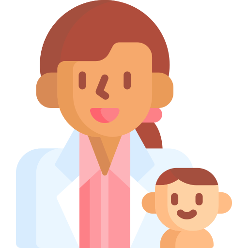

MedicaMea


Detetu starijem od godinu dana potrebna su 3 glavna obroka i 2 užine u toku dana. Poželjno je da dete prvi obrok dobije u toku prvih sat vremena nakon buđenja, idealno bi bilo između 7 i 9h. Ostale obroke planirajte sa razmacim od po 2-3h. Budite strpljivi, nudite detetu hranu novih tekstura i ukusa, ponudite više puta istu namirnicu dok je dete ne prihvati.
Sta je temperatura? Povišena temperatura je normalna reakcija organizma koja ima za cilj da aktivira imuni sistem da se bori protiv infekcija. "Prava" povišena telesna temperatura je 38C i viša.
Veoma je važno hidrirati decu kada imaju temperaturu. Razlog za HITNU posetu pedijatru je teško disanje vašeg deteta
Prve 3 godine života su najvažnije za razvoj dečjeg mozga i čak 80% razvoja mozga odvija se u prve 3 godine. Po navodima Svetske zdravstvene organizacije i Američke asocijacije pedijatara, izlaganje dece mlađe od 18 meseci elektronskim ekranima, ima izuzetno negativan efekat na razvoj i usvajanje govora kod dece, sposobnost čitanja i razvoj kratkoročne memorije. Pored toga, dovodi do problema sa spavanjem, ponašanjem i pažnjom.
Upala srednjeg uha je vrlo često oboljenje koje pogađa dva od tri deteta uzrasta do godinu dana. Jedno je od najčešćih oboljenja koje zahteva lečenje antibioticima. Antibiotike izbegavamo zbog pojave rezistencije i zbog različitih nezeljenih efekata antibiotika. Izbegavanje boravka dece u prostorijama u kojima se puši smanjuje rizik od pojave ove bolesti.